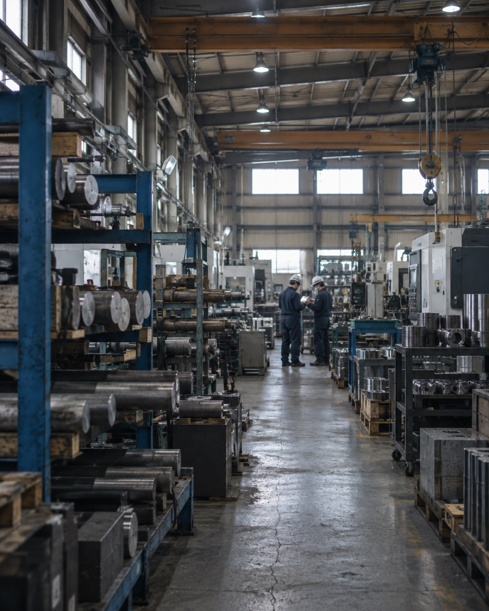
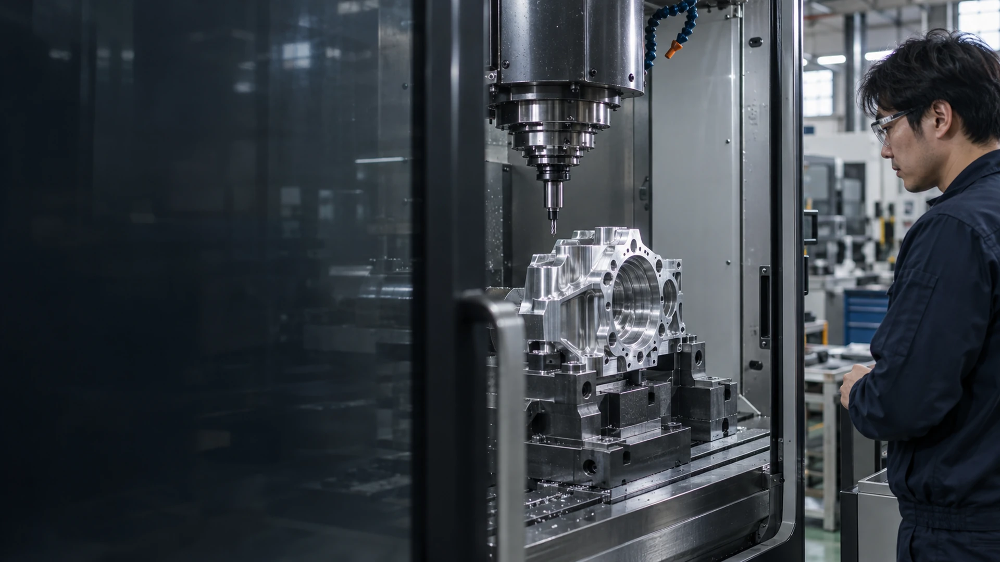
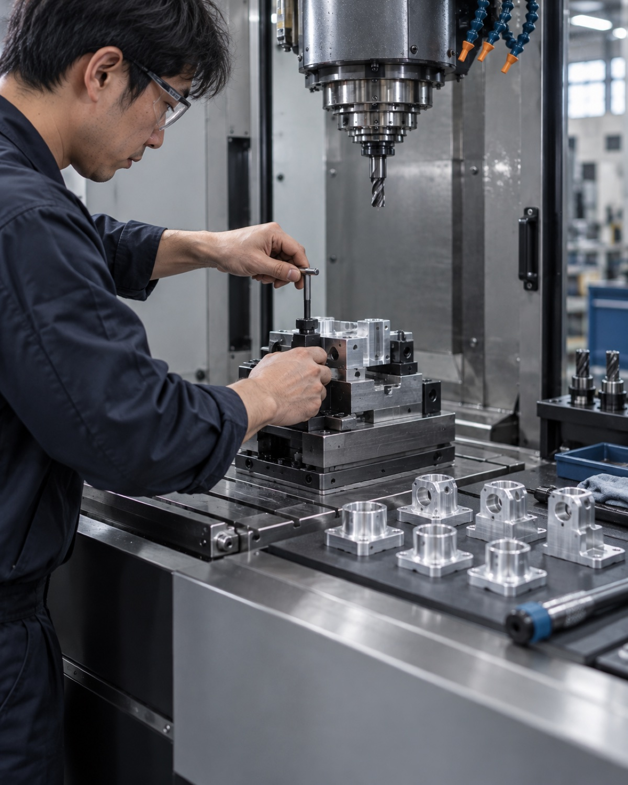
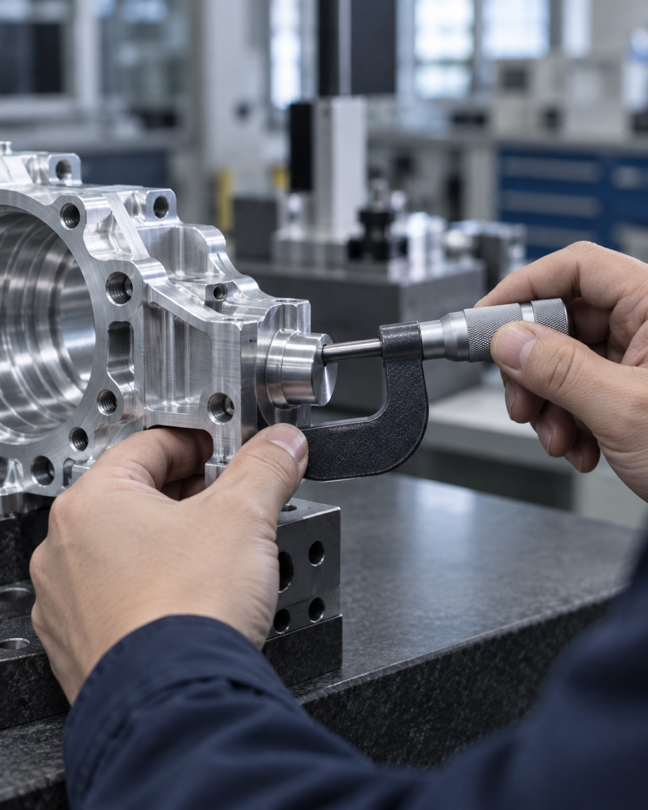
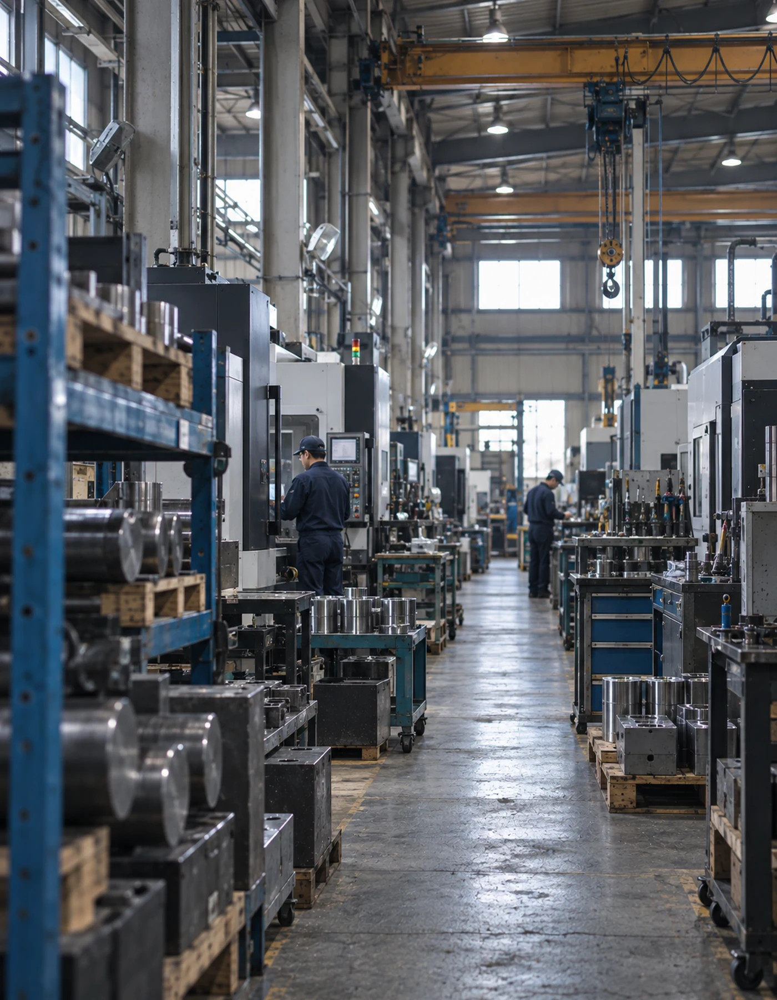
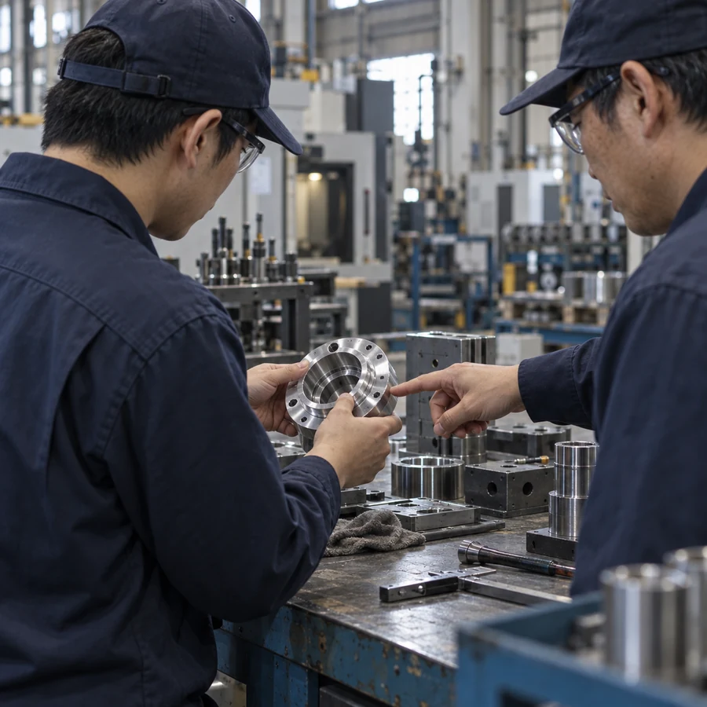

01
検討段階から技術者が参加
図面が固まる前から材質・形状・工程を一緒に整理します。

PRECISION THROUGH DIALOGUE
材質、形状、工程、コスト。まだ答えが一つでない段階から、加工技術者が一緒に考えます。
WHAT WE CAN DISCUSS
図面が固まる前だからこそ、選べる方法があります。条件を整理し、つくり方の選択肢を一緒に検討します。
用途や加工性から候補を整理
保持方法や工具経路を含めて検討
一点の試作から段取りを組み立てる
品質を保ちながら手順を見直す
WHY SHINWA
加工前の判断、加工中の確認、仕上がりの検査まで。担当技術者が条件の変化を追い、次の判断につなげます。

図面が固まる前から材質・形状・工程を一緒に整理します。

目的と次の検証を見据えて、必要な段取りを組みます。

加工途中の確認から最終測定まで、判断の履歴をつなぎます。
CAPABILITIES
PROCESS
用途・課題を共有
材質・工程を検討
目的から段取りを設計
寸法・品質を確認
結果を次へ反映
SELECTED WORKS


 お問い合わせContact図面がなくても、分かる範囲からご相談ください。
お問い合わせContact図面がなくても、分かる範囲からご相談ください。